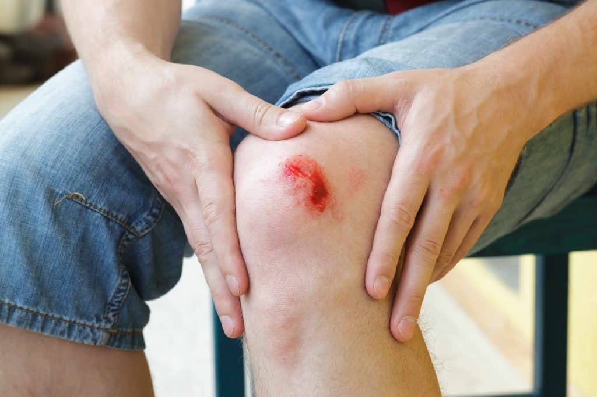

wound
Non-Harmfull and can be cured using home remedies
A wound is any disruption of or damage to living tissue, such as skin, mucous membranes, or organs.
Wounds can either be the sudden result of direct trauma (mechanical, thermal, chemical), or can develop slowly over time due to underlying disease processes such as diabetes mellitus, venous/arterial insufficiency, or immunologic disease.Wounds can vary greatly in their appearance depending on wound location, injury mechanism, depth of injury, timing of onset (acute vs chronic), and wound sterility, among other factors. Treatment strategies for wounds will vary based on the classification of the wound, therefore it is essential that wounds be thoroughly evaluated by a healthcare professional for proper management. In normal physiology, all wounds will undergo a series of steps collectively known as the wound healing process, which include hemostasis, inflammation, proliferation, and tissue remodeling. Age, tissue oxygenation, stress, underlying medical conditions, and certain medications are just a few of the many factors known to affect the rate of wound healing.
👉causes
 Wounds can be caused by something sudden, such as a cut, a fall or a bad knock.
Cuts, grazes and lacerations are all examples of wounds. Cuts are usually caused by a sharp object like a knife or glass, or even a sheet of paper. Lacerations are a deep cut or tear of the skin - they usually have irregular jagged edges.
Grazes (also known as abrasions) are superficial (surface) injuries where the upper skin layer is damaged by friction. Grazes can happen when a person falls off a skateboard or bike and their body moves across the ground. ‘Road rash’ is a term used to describe these injuries in cyclists or motorcyclists, resulting from the skin scraping the road surface.
Puncture wounds are deep wounds caused by a sharp pointed object, such as a nail, penetrating the skin. An animal bite can also cause a puncture wound. Puncture wounds may not bleed very much, but they are prone to infection.
Surgical wounds are cuts made during surgery – they are usually closed with stitches (sutures).
Other types of wounds can be caused by being immobile, such as bed sores or pressure sores and ulcers.
Wounds can be caused by something sudden, such as a cut, a fall or a bad knock.
Cuts, grazes and lacerations are all examples of wounds. Cuts are usually caused by a sharp object like a knife or glass, or even a sheet of paper. Lacerations are a deep cut or tear of the skin - they usually have irregular jagged edges.
Grazes (also known as abrasions) are superficial (surface) injuries where the upper skin layer is damaged by friction. Grazes can happen when a person falls off a skateboard or bike and their body moves across the ground. ‘Road rash’ is a term used to describe these injuries in cyclists or motorcyclists, resulting from the skin scraping the road surface.
Puncture wounds are deep wounds caused by a sharp pointed object, such as a nail, penetrating the skin. An animal bite can also cause a puncture wound. Puncture wounds may not bleed very much, but they are prone to infection.
Surgical wounds are cuts made during surgery – they are usually closed with stitches (sutures).
Other types of wounds can be caused by being immobile, such as bed sores or pressure sores and ulcers.